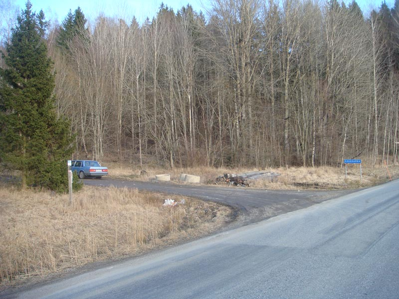
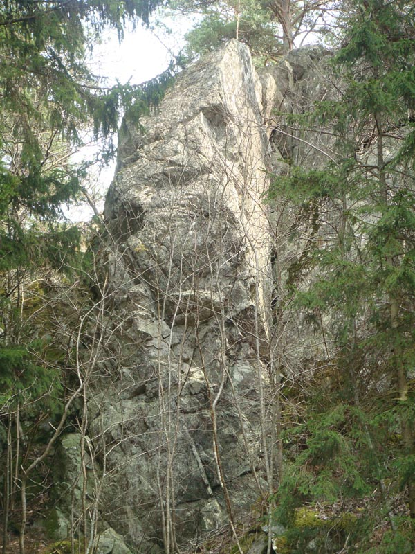
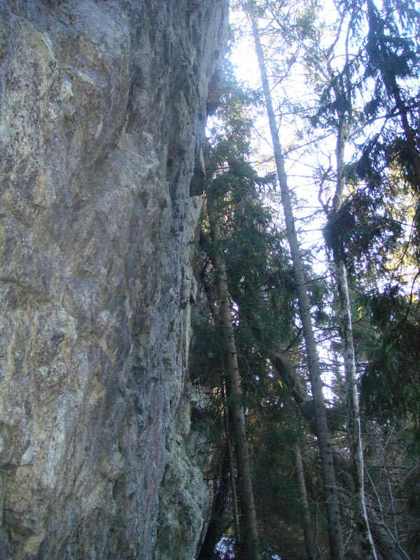

Lat: 59.12450000000000 Long: 17.77730000000000
Oklättrad klippa nära Kagghamra i Grödinge. Klippan bestor av flera väggpartier, 7-12m hög och mestadel svagt överhängande. Det finns potential för några leder i varierande svårighetsgrad.
Klippan är sydvästvänd men mestadels skuggas av granskogen.
På flera kartor kan man förtfarande se ett hus ganska nära klippan. Det var kanske huvudorsaken att klippan har varit helt outveklad och oklättrad trots att den finns listad i Stockholmsföraren (1992, 1996 och 2008).
Huset finns inte längre!
Gullhamra berg
. Kör 2,5km till och sväng vänster mot Kagghamra. Äfter ca 600m kommer du till Fornborgsberget som blir det första berget vänster om vägen. Parkera inte i vägkröken vid berget! Kör vidare, passera en sommarstuga och parkera på parkeringsplats vid en grusväg presis innan Kagghamra-skylt. Gå 250m tillbaka till vägkröken och sen 50m upp till klippan.
Ta buss 727 från Tumba station mot Skanssundet. Bergavägen hpl ligger ca 100m innan sväng mot Kagghamra och 600m bort från klippan som är synlig därifrån. Restid ca 18min.
Accessläget vid Fornborgsberget är oklart. Det ligger på privat mark. Dessutom finns en välkänd fornborg på berget. Fornborgen är belagen på andra “oklätterbara” sidan av berget, men...
Var uppmärksam och glöm inte att nedsågning av träd och grenar ingår faktist inte i allemansrätten. Undvik att parkera nära klippan och håll låg profil tills mer information finns tillgänglig.
Några projekt påbörjades vintern 2009.
Inte hög men intressant klippformation längst åt vänster.
Inga leder eller projekt. Möjlighet till ett par lättare turer.
10-12m hög svagt överhängande vägg.
Inga leder eller projekt. Möjlighet till 5-6 sportturer.
Mindre men kraftigt överhängande väggpartiet längst åt höger.

Kategori:Stockholm
Kategori:Västra Södertörn
Kategori:Oklättrat
Kategori:Saknar leder
Kategori:Saknar skiss
Kategori:Saknar skiss
Kategori:sport
Kategori:trad
Kategori:vertikalt
Kategori:överhäng
Copyright (C) Permission is granted to copy, distribute and/or modify this document under the terms of the GNU Free Documentation License, Version 1.3